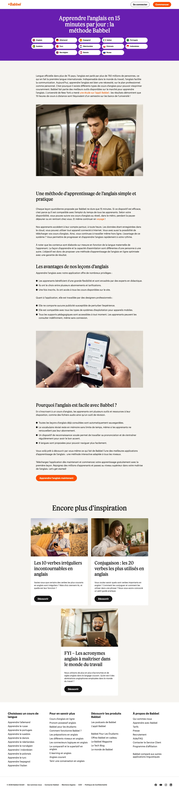
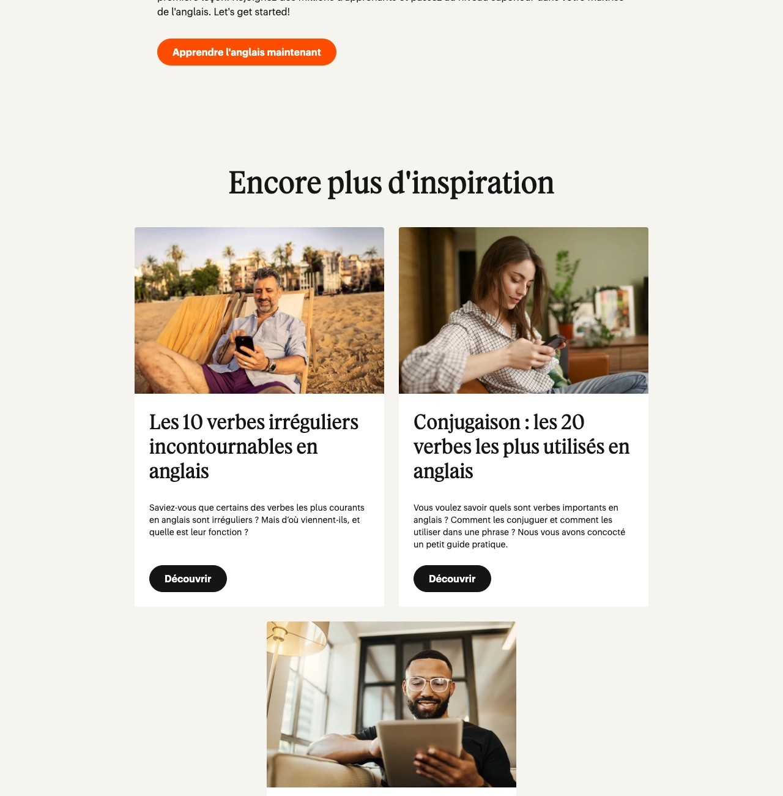

Babbel
Optimisation d’une page de destination
Page de destination dédiée « 3 semaines ». Audit de la page actuelle, refonte complète et justification de chaque choix, de l'accroche publicitaire au clic final.
Contexte
Marque analysée : Babbel (Babbel GmbH) — apprentissage des langues, marché français.
Produit : abonnement Babbel Anglais · Trafic : publicités Meta, audience froide, mobile.
Objectif de conversion unique : démarrage de la première leçon gratuite, sans carte bancaire.
Problème identifié
Envoyer une audience froide issue de Meta sur cette page revient à payer un clic, puis à proposer treize sorties avant d'avoir formulé une seule raison de rester.
Le seul appel à l'action contextuel se trouve tout en bas de la page, après environ 900 mots ; treize liens vers d'autres langues sont placés immédiatement sous le titre principal ; et la page ne contient ni témoignage, ni note, ni logo de presse, ni prix.
Méthodologie
Audit manuel de la page publique et des fiches d'application, recherche documentaire sur les repères de conversion, rédaction intégrale de la page, maquette HTML/CSS jointe, protocole de tests A/B.
Les conventions de lecture distinguent OBSERVÉ, SOURCÉ et FICTIF.
Analyse
Faiblesse n° 1 — L'appel à l'action contextuel est enterré en bas de page.
Faiblesse n° 2 — La page multiplie les sorties avant d'avoir donné une raison de rester.
Faiblesse n° 3 — La preuve sociale est absente, et la preuve d'autorité est sous-exploitée.
Le pari central : la personne qui clique n'a pas un problème de vocabulaire ; elle comprend l'anglais et n'ose pas le parler. Toute la page est écrite pour désamorcer cette croyance avant de parler de l'offre.


Recommandation stratégique
Une page de destination dédiée à une campagne, construite autour d'une promesse unique — tenir une vraie conversation en trois semaines — et d'un seul objectif de conversion : démarrer la première leçon gratuite, sans carte bancaire.
Pas d'abonnement à vendre sur cette page, pas de choix de langue, pas de lien sortant. Une action, une seule.
Livrables
- Audit de la page actuelle
- Contenu rédigé, section par section
- Justification de chaque élément
- Cohérence annonce → page de destination
- Considérations mobile, technique et accessibilité
- Roadmap de tests A/B
KPI et mesure
Objectif chiffré retenu pour l'exercice : 8 à 12 % de taux de conversion sur le démarrage de la leçon gratuite. Cette cible est une hypothèse de test, pas un résultat observé.
Limites du projet
Aucune donnée de performance n'est accessible : taux de conversion réel, taux de rebond, profondeur de défilement, vitesse mesurée. Les faiblesses identifiées sont des hypothèses de conversion appuyées sur des principes documentés, à valider par des tests.